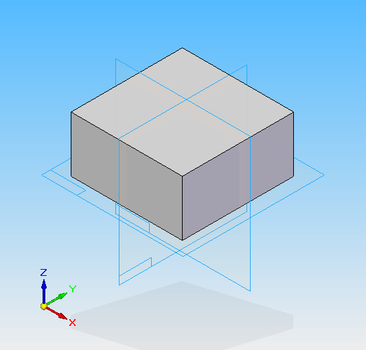
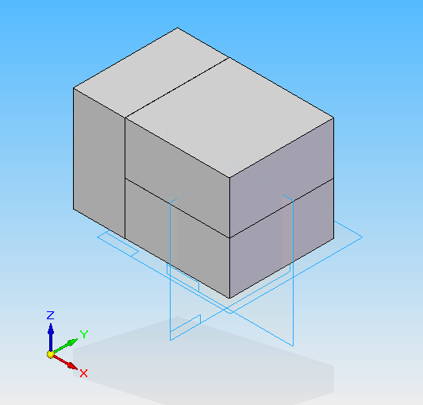
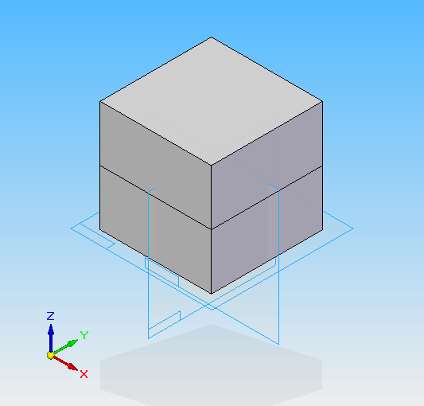

The Occurrence object represents an instance of a part or subassembly within an assembly. It is an OLE link to a part or assembly document. An Occurrence object can only be added to an assembly through an Occurrences collection object.
The automation interface for the assembly environment allows you to place parts and subassemblies into an assembly. This is handled by the AddByFilename method, which is provided on the Occurrences collection object. Parts and subassemblies are differentiated by the Subassembly property on each Occurrence object. The following example shows how to place a part into an assembly.
Parts or subassemblies are initially placed into the assembly at the same location and position they maintain in their original files. The following illustration shows a block and its position relative to the three initial global reference planes. The block is positioned so its corner is at the coordinate (0,0,0). When this part is placed into an assembly using the AddByFilename method, it is placed in the same location and orientation in the assembly file as it existed in the original part file. Subassemblies follow the same rules.

Adding a new Occurrence
Because occurrences are placed in the same relative location and orientation in which they were initially created, you will typically change the part or subassembly’s position and orientation after placement. These methods apply only to grounded occurrences. Occurrences that are placed with relationships to other occurrences have their location and orientation defined by their relationships to the other occurrences.
To show how to use these methods, consider a block with dimensions of 100 mm in the x axis, 100 mm in the y axis, and 50 mm in the z axis. Assume that you need to place three of these parts to result in the following assembly:

Manipulating Occurrences
The following illustration shows the assembly after placing the second block and moving it into place:

And after placing the third block, rotating it, and moving it into place, the assembly is as follows:
This example positions the blocks using the Move method. You can also use the SetOrigin method, which is available on the Occurrence object, to move occurrences. SetOrigin works together with GetOrigin; GetOrigin returns the coordinates of the occurrence origin with respect to the assembly origin, and SetOrigin positions the occurrence's origin relative to the assembly's origin.